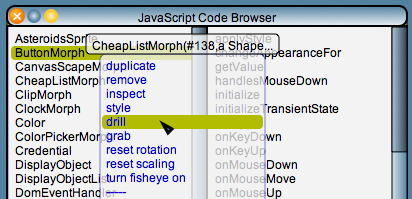
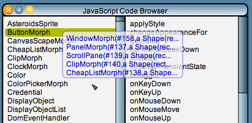
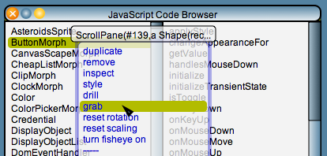
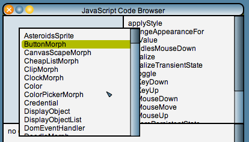

For instance, if you use the "drill" operation to view the hierarchy of the upper left panel of a class browser (see the screen snapshots below), you get a drill menu object that shows you the layers of objects in that panel, starting from the bottommost object (in this case: a WindowMorph) to the topmost object (in this case: a CheapListMorph)
When you choose any of the objects in the drill menu, the system opens a regular popup menu that allows you to manipulate that particular object directly, even though that object is not necessarily topmost on the screen. Using this feature you can, e.g., open an inspector or a style panel to edit the properties of objects that are deep down in the visual hierarchy.
Additionally, you can use a special "grab" menu operation to pick up objects that are not topmost on the screen, e.g., to move an entire panel with its contents away from its current location.
   